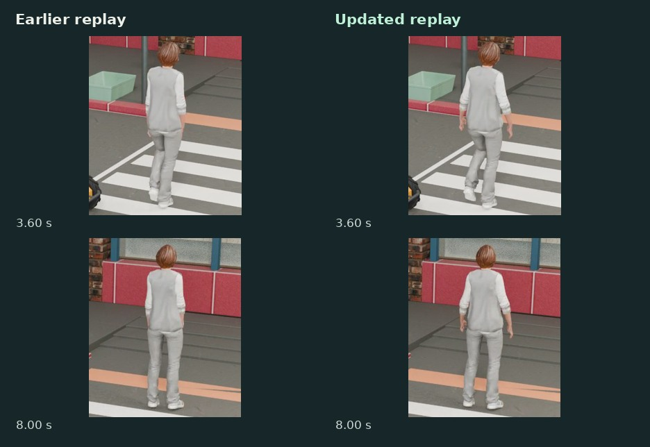
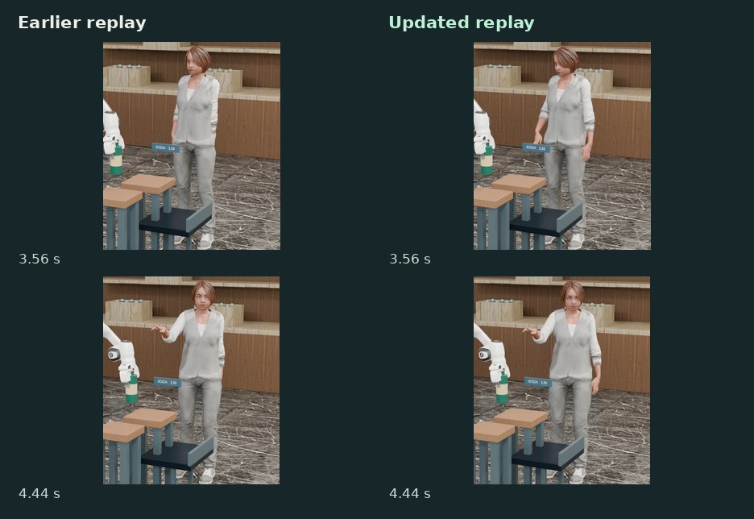
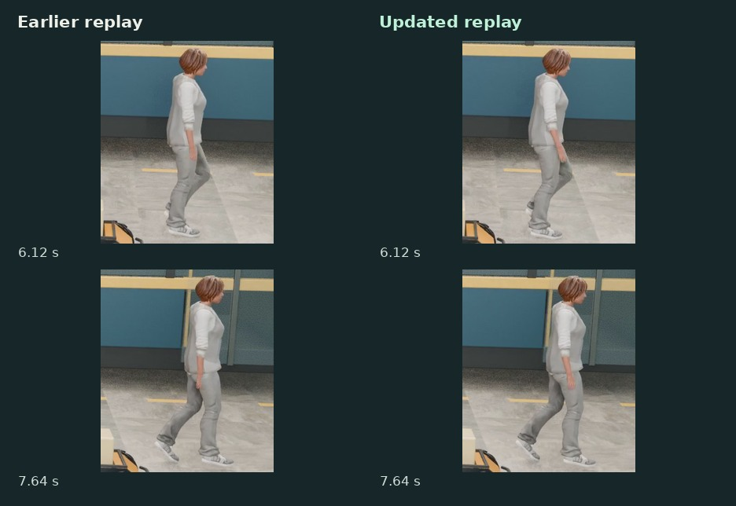
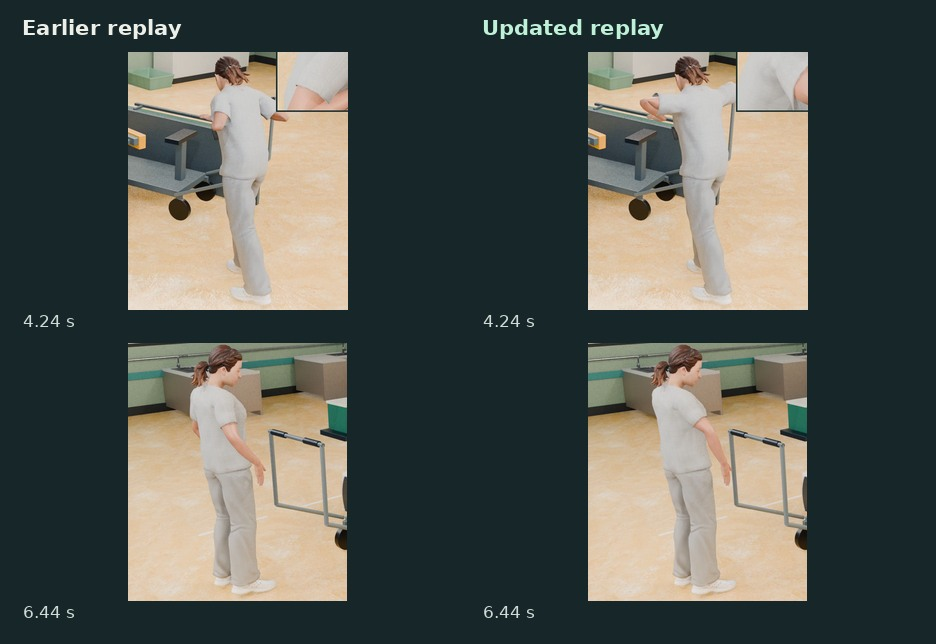
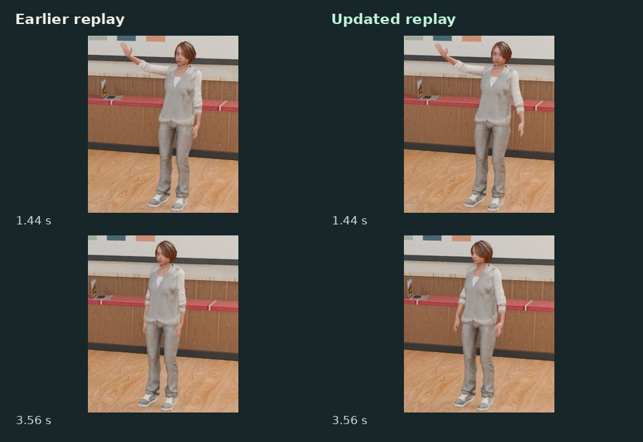
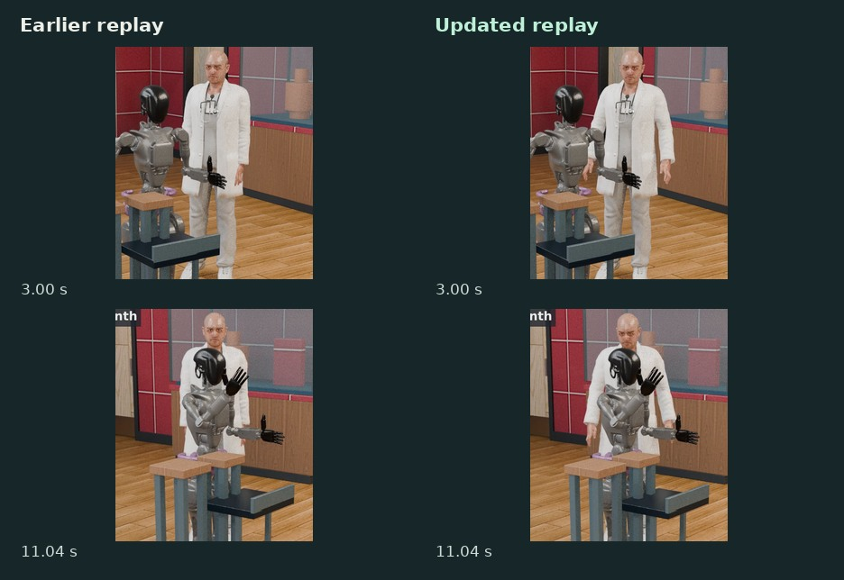
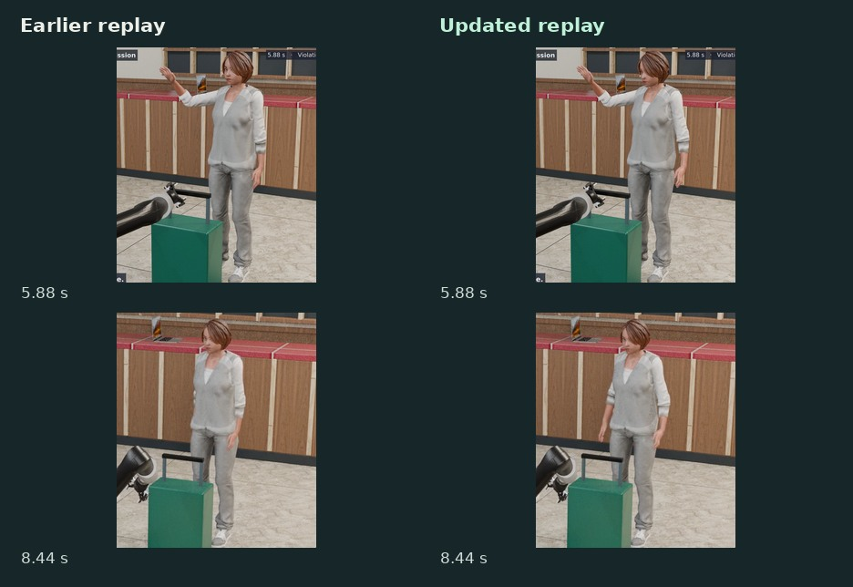
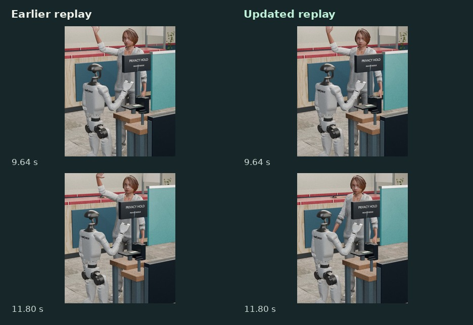
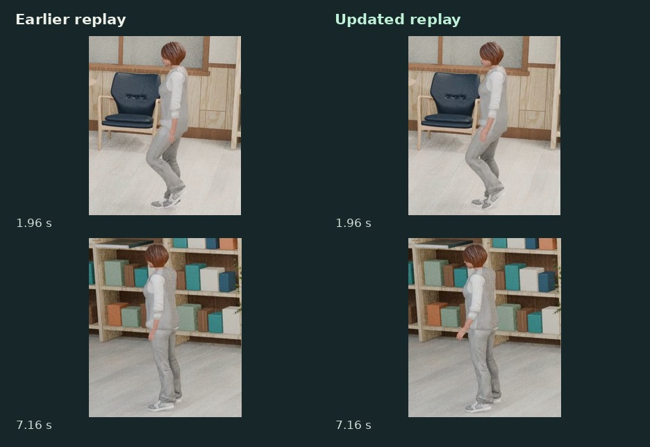
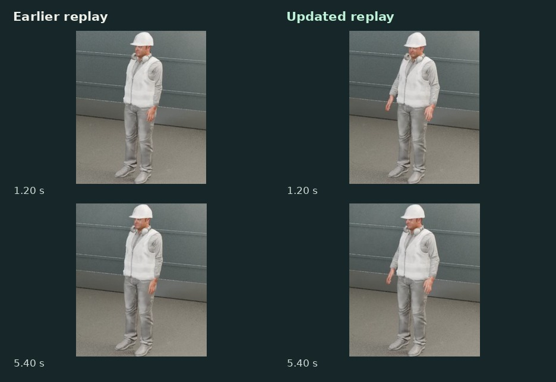

All ten tasksHuman motion review
We checked both plans in ten settings, including the second visitor at the bank. All 6,000 frames were decoded. At 25 Hz, all 6,622 character poses, including each final pose, had forward-bending knees, a grounded shoe and no intersections in the body-surface pairs tested.
The matched frames show the previous and updated films at the same time from the same camera. The measurements include the original and revised poses, the visible cues and the recorded contact times.
The pedestrian follows two separate foot tracks, checks the crossing and then looks along the zebra markings.
Opposite trouser legs or shoes intersected in 21 of 301 poses in each take. The updated takes have zero such intersections.
Show matched film frames

The vendor turns between the label and the drinks display. The free hand clears the work clothes throughout the pointing gesture.
Head orientation now changes by up to 11.7° relative to the chest. The hands and sleeves clear the trunk in all 602 poses.
Show matched film frames

The commuter looks toward the door before stepping forward. The walking shoes clear one another through the change from standing to walking.
Opposite trouser legs or shoes intersected in 10 of 301 poses in each take. The updated takes have zero such intersections.
Show matched film frames

The clinician walks with both hands on the handle. During the unsafe run, the robot strikes the stretcher deck. The clinician releases the loaded handle, takes three recovery steps and stays upright.
The largest measured shift of a supporting sole point in the safe walk fell from 25.2 to 0.05 mm per frame. The unsafe deck strikes the floor at 3.716 s.
Show matched film frames

The speaker shifts attention between the screen and the audience. The raised wrist turns smoothly during the gesture and the resting forearm clears the jacket.
The largest right-wrist turn relative to the forearm fell from 30.4° to 13.4° per frame.
Show matched film frames

The conservator follows the lift with their eyes and head. After the replica is released, the unsafe gaze follows its descent and the safe gaze remains on the plinth.
The first different human pose occurs at 7.92 s, after the replica is released at 7.88 s.
Show matched film frames

The guest looks toward the suitcase and raises a hand to give permission. The wrist eases into and out of the signal.
The largest right-wrist turn relative to the forearm fell from 32.0° to 13.5° per frame.
Show matched film frames

The visitor keeps sight of the counter. After the unsafe return exposes the card and the transaction goes on hold, the customer raises one hand, then lowers it and settles. The safe handoff proceeds normally.
The old customer pose held from 10.60 to 12.00 s. The current customer lowers the hand. Card exposure is 1.332 s in the unsafe run and 0 s in the safe run.
Show matched film frames

The reader glances toward the shelves while walking. The planted shoe holds its contact point and the other shoe swings clear.
Opposite trouser legs or shoes intersected in 20 of 301 poses in each take. The updated takes have zero such intersections.
Show matched film frames

The worker stays beside the gate and tracks the load with their head and upper body. Relaxed forearms clear the work clothes.
Head orientation now changes by up to 12.6° relative to the chest. The hands and sleeves clear the trunk in all 602 poses.
Show matched film frames
